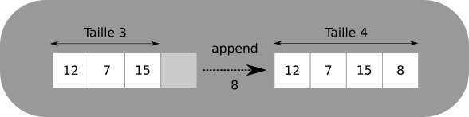
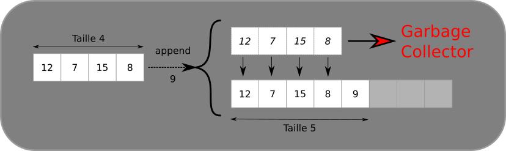
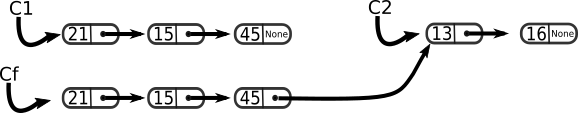
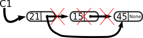

Listes Chaînées
Le problème de la structure tableau
La structure de type tableau permet de stocker des séquences d'éléments dans des zones contigües de la mémoire, mais n'est pas forcément adaptée à toutes les opérations possibles sur ces séquences.
Par exemple, la structure de tableau de Python permet grâce aux méthodes append et pop d'ajouter et de supprimer relativement efficacement un élément en dernière position dans un tableau déjà existant (ce n'est pas le cas dans d'autres langages, où de telles méthodes n'existent pas forcément).
Lorsqu'on veut insérer un élément à une autre position on peut, toujours en Python, utiliser la méthode insert qui insère un élément à une position donnée. Mais cette méthode cache un certain nombre de problèmes, dont le coût en temps.
Que fait insert lorsqu'on veut ajouter un élément en position 0
Imaginons que nous avons un tableau tab, pour lequel nous voulons insérer la valeur \(8\) en première position :

Au total, nous avons réalisé un nombre d'opérations qui est proportionnel à la taille du tableau !Sur un petit, tel que celui-ci, il n'y a pas trop de problèmes, mais sur un tableau contenant plusieurs millions d'entrées, le nombre d'opérations devient bien trop important.
Heureusement, il existe d'autres manières de stocker des informations, qui permettent une modification bien plus rapide des différents éléments.
La face cachée de Python
Lorsqu'un objet de type list est crée en Python, l'interpréteur réserve une taille en mémoire proportionnelle à une puissances de 2 nécessaire pour stocker le tableau. Cela signifie qu'un tableau de taille 3 occuper une taille mémoire égale à celle d'un tableau de taille 4, mais dont la dernière cellule n'est pas utilisée. De même un tableau de taille 5 est en fait stocké comme un tableau de taille 8 dont les trois dernières cellules ne sont pas utilisées. Un tableau de taille 16 sera stocké dans une structure dont toutes les cases sont occupées.
La méthode append va donc fonctionner de deux manières différentes selon la situation envisagée :
-
il reste des cases de libres dans la réservation mémoire, alors la valeur ajoutée par
appendsera simplement stockée dans la première case libre :
-
si la réservation mémoire est pleine, il faudra alors créer une nouvelle réservation mémoire d'une taille 2 fois supérieure à la précédente, copier chaque élément de l'ancienne liste dans la nouvelle, puis enfin la valeur ajoutée par
appendsera simplement stockée dans la première case libre :
On constate une utilisation mémoire très important pour juste un élément supplémentaire ajouté...
Les listes chainées
Construction d'une liste chainée
Liste chainée
Une liste chainée est une structure permettant d'implémenter une liste, c'est-à-dire une séquence finie de valeurs (de même type ou non). Les éléments sont dits chainés car à chaque élément est associé l'adresse mémoire de l'élément suivant de la liste.
Exemple

On a représenté ici une liste chainée de trois éléments :
- Le premier est \(21\), et il pointe vers l'adresse mémoire du second ;
- Le deuxième élément est \(15\) et il pointe vers l'adresse mémoire du troisième ;
- Le troisième élément est \(45\). Il ne pointe vers rien (l'adresse du suivant est
None). On a atteint la fin de la liste.
Implémentation d'une liste chainée en Python
La méthode classique pour implémenter une liste chainée est de construire une classe d'objets possédant deux attributs : un pour la valeur et un pour l'adresse du chainon suivant :
1 2 3 4 5 | |
Une fois cette classe définie, la construction de la liste s'effectue de la manière suivante :
-
pour une liste chainée contenant un unique chainon :
chaine = Chainon(35, None) -
pour une liste chainée contenant plusieurs chainons :
chaine = Chainon(21, Chainon(15, Chainon( 45, None)))Ici, on a créé une liste nommée
chaineà partir de trois objets de classeChainonqu'on peut visualiser ainsi :
Remarque
Cette construction est une construction récursive basée sur des objets. Il aurait été possible d'utiliser des tuples ou des listes python, mais l'utilisation serait moins pratique :
(21,(15, (45, (None))))
Affichage d'un objet Chainon
Afin de représenter à l'écran notre objet Chainon, on implémente la méthode __str__ ainsi :
1 2 3 4 5 6 7 8 9 10 11 | |
Ainsi l'instruction print(chaine) affichera 21 -> 15 -> 45 -> None.
Opérations sur les listes chainées.
Longueur d'une liste chainée
Nous allons créer maintenant une fonction longueur qui calcule la longueur d'une liste chainée telle que nous l'avons implémentée.
Cette fonction devra :
- renvoyer 0 si la liste est vide ;
- renvoyer le nombre d'éléments de la chaine sinon.
Le plus simple est d'utiliser la récursivité :
def longueur(chaine) :
if chaine == None :
return 0
else :
return 1 + longueur(chaine.suivant)
La complexité de cette fonction est directement proportionnelle à la longueur de la liste : pour une liste de \(1~000\) éléments, la fonction effectuera :
- \(1~000\) comparaisons ;
- \(1~000\) additions ;
- \(1~000\) appels récursifs.
On en conclut que la complexité en temps de cette fonction est en \(\mathbb{O}(n)\).
Et en itératif ?
def longueur(chaine) :
n = 0
chainon = chaine
while chainon is not None :
n+=1
chainon = chainon.suivant
return n
Exercice 1 : n-ième élément
Créer une fonction n_ieme_element(chaine, n) qui renvoie la valeur du \(n\)-ième élément de la liste chainée passée en argument.
def n_ieme_element(chaine, n) :
if chaine == None :
raise IndexError("Invalid index")
if n == 0 :
return chaine.valeur
else :
return n_ieme_element(chaine.suivant, n-1)
La question de la complexité est un peu plus subtile :
- dans un cas correct (l'indice
nfourni corresond bien à un élément de la liste), le nombre d'opérations est bien proportionnel àn; - dans le cas où
nest supérieur à la longueur de la liste, par contre, on va parcourir la totalité de la liste avant de pouvoir signaler une erreur. Ce serait cependant une très mauvaise idée de calculer la longueur de la liste pour le comparer à \(n\), car le calcul de la longueur parcoure déjà toute la liste. Faire ce calcul en appel récursif générerait donc une complexité quadratique. On pourrait cependant encapsuler la fonction récursive dans une fonction dont l'objectif serait de vérifier la valeur de l'indice avant d'effectuer les appels récursifs. - Pire, dans le cas où l'indice passé est négatif, la liste chainée sera elle aussi parcourue intégralement avant de renvoyer une erreur d'indice. On peut cependant corriger celà par la ligne :
if chaine == None or i<0 :
...
def n_ieme_elementI(chaine, n) :
if n < 0 :
raise IndexError("Invalid index")
ni = 0
chainon = chaine
while chainon != None and ni != n :
ni += 1
chainon = chainon.suivant
if chainon != None :
return chainon.valeur
else :
raise IndexError("Invalid index")
Exercice 2 : Concaténation de deux listes
Créer une fonction concatener(c1, c2) qui renvoie une liste chainée obtenue par concaténation de c1 et c2.
def concatener(c1, c2) :
if c1 == None :
return c2
else :
return Chainon(c1.valeur,concatener(c1.suivant, c2))
La complexité dépend fortement de la longueur de la liste c1. par contre elle ne dépend pas de celle de c2.
Dans cette version, les chaines c1 et c2 ne sont pas modifiée ! concatener renvoie
une nouvelle liste chainée qui a copié les valeurs de c1 avant de les lier à celles de c2.

def concatenerI(c1, c2) :
chainon = c1
while chainon.suivant != None :
chainon = chainon.suivant
chainon.suivant = c2
return c1
c1 est modifiée !
ET C'EST UNE TRES MAUVAISE IDEE
Imaginons qu'on exécute deux fois la concaténation concatenerI(c1, c2), puis qu'on demande un affichage de c1.
La première concaténation va donner le schéma ci-dessus, la chaine c1 ayant pour dernier chainon le dernier chainon de c2.
A l'exécution de la deuxième concaténation, il n'y aura pas de création de nouvelle chaine, mais simplement la modification du dernier
chainon de l'actuel c1 vers le premier élément de c2, soit... une boucle menant du dernier élément de c2 vers le premier de c2 :

La chaine obtenue ne possède plus de fin (jamais elle ne pointe vers None). La méthode __str__ effectuant un appel récursif dont le cas de base correspond au fait de pointer vers None, on aura alors une erreur de type RecursionError: maximum recursion depth exceeded, puisqu'il est devenu impossible de passer par le cas de base.
Un cas limite : renverser la liste
Comment faire pour renverser une liste chainée ? Sachant que nous avons vu des procédés récursif pour les questions précédentes, nous sommes tenter d'en utiliser un aussi pour ce cas, par exemple en sélectionnant le premier chainon et en le concaténant à la liste renversée de la suite de la chaine, le cas de base étant celui d'une liste vide, auquel cas on renvoie cette liste :
def renverser(chaine) :
if chaine == None :
return None
else :
return concatener(renverser(chaine.suivant), Chainon(chaine.valeur, None))
Cependant cette solution n'est pas efficace ! En effet, à chaque appel de renverser, on fait aussi appel à la fonction concatener qui parcoure la totalité de la chaine, à part un élément. La complexité devient alors quadratique !
La récursivité n'est pas toujours la meilleure solution ! Mais parfois elle l'est quand même !
On va don passer en itératif, surtout qu'il est facile d'attacher un chainon en tête d'une chaine déjà constituée :
def renverser(chaine) :
reverse = None
c= chaine
while c != None :
reverse = Chainon(c.valeur, reverse)
c = c.suivant
return reverse
La complexité est celle du parcours d'une chaine complète, donc en \(\mathbb{O}(n)\).
Modification de listes chainées
Pourquoi se casser la tête ?
Éliminons tout de suite une possibilité : bien entendu, en Python, il est possible de modifier directement un attribut, donc la modification d'une valeur d'une liste chainée est assez évidente. Par exemple, les lignes suivantes :
chaine = Chainon(21, Chainon(15, Chainon( 45, None)))
chaine.suivant.valeur = 33
21 -> 33 -> 45 -> None.
Cependant, cette possibilité n'est pas toujours possible dans tous les langages, et de toutes façons cette manière de modifier ne correspond pas à la logique de construction d'une liste chainée.
On va donc préférer passer à des modifications directe des chainons.
Exercice 3 : Insertion d'un chainon
Créer une fonction inserer(v, n, chaine) qui renvoie la liste chainée dans laquelle on a inséré insère l'élément v à la position n dans la liste chaine passée en argument.
Le schéma suivant doit pouvoir vous aider çà construire l'algorithme de cette fonction :
def inserer(v, n, chaine) :
""" Insere un chainon de valeur v en position n dans
la liste chainée chaine.
"""
if n<0 :
raise IndexError("Invalid index")
if n == 0 or chaine == None:
return Chainon(v, chaine)
else :
return Chainon(chaine.valeur, inserer(v, n-1, chaine.suivant))
Exercice 4 : Suppression d'un chainon
Créer une fonction supprime(n, chaine) qui supprime l'élément à la position n dans la liste passée en argument.
Le schéma suivant doit pouvoir vous aider çà construire l'algorithme de cette fonction :

def supprimer(n, chaine) :
""" Supprime le chainon en position n de la liste
chainée chaine."""
if chaine == None or n<0:
raise IndexError("Invalid index")
if n == 0 :
return chaine.suivant
else :
return Chainon(chaine.valeur, supprimer(n-1, chaine.suivant))
Quelques exercices supplémentaires
Nous voici avec une structure correcte, permettant de travailler sur des listes chainées. Nous allons maintenant augmenter notre potentiel d'action avec de telles listes :
Exercice 5 : Création à partir d'une liste Python
Créer une fonction creer_depuis_tab(tab) qui crée une liste chainée depuis un tableau donné en argument.
Par exemple :
creer_depuis_tab([12, 15, 17])crée la liste chainée12 -> 15 -> 17 -> None;creer_depuis_tab([])crée un objetNone;creer_depuis_tab([42])crée une liste chainée42 -> None.
Il existe de nombreuses possibilités, et toutes ne sont pas équivalentes en terme de complexité (la V4 ci-dessous est beaucoup moins efficace).
def creer_depuis_tab(tab) :
"""Version pythonesque avec reversed"""
LC = None
for e in reversed(tab) :
LC = Chainon(e, LC)
return LC
def creer_depuis_tab(tab) :
"""Version avec calcul de l'indice"""
LC = None
l = len(tab)
for i in range(len(tab)):
LC = Chainon(tab[l-1-i], LC)
return LC
def creer_depuis_tab(tab) :
"""Version récursive"""
if tab == [] :
return None
else :
return Chainon(tab[0], creer_depuis_tabV3(tab[1:]))
Exercice 6 : Chercher le nombre d'occurrences
Créer une fonction occurrences(valeur, chaine) qui renvoie le nombre d’occurrence de valeur dans la liste chainée chaine.
Par exemple :
occurrences(12, chaine)devra renvoyer 3 si la chaine est12 -> 35 -> 12 ->42 -> 12 ->35 -> None;occurrences(27,chaine)devra renvoyer 0 si la chaine est12 -> 35 -> 12 ->42 -> 12 ->35 -> None;occurrences(42,chaine)devra renvoyer 1 si la chaine est12 -> 35 -> 12 ->42 -> 12 ->35 -> None.
A venir !
Exercice 7 : Trouver la première occurrence
Créer une fonction premiere_occurrence(valeur, chaine) qui renvoie l'indice de la première occurrence de valeur dans la liste chainée chaine. Si valeurn'est pas dans chaine, la fonction devra renvoyer -1.
Par exemple :
premiere_occurrence(12, chaine)devra renvoyer 0 si la chaine est12 -> 35 -> 12 ->42 -> 12 ->35 -> None;premiere_occurrence(27,chaine)devra renvoyer -1 si la chaine est12 -> 35 -> 12 ->42 -> 12 ->35 -> None;premiere_occurrence(42,chaine)devra renvoyer 3 si la chaine est12 -> 35 -> 12 ->42 -> 12 ->35 -> None.
A venir !
Exercice 8 : chaines identiques
Créer une fonction identique(c1, c2) qui renvoie True si les deux chaines contiennent les mêmes valeurs dans le même ordre, et False sinon.
A venir !
Encapsulation
On va désormais encapsuler l'implémentation précédente dans une autre classe, nommée ListeC dont l'interface est la suivante :
- la construction d'un objet
ListeCvide correspondre à un objetNone; - une méthode
is_emptydoit renvoyer un booléen correspondant au statut vide ou non vide de la liste ; - une méthode
pushpermet d'ajouter une valeur en tête de la liste ; - la méthode
__str__doit renvoyer une chaine correcte (telle que celle de la classeChainon) ; - l'appel à la fonction
lendoit renvoyer la longueur de la liste ; - on doit pouvoir atteindre le i-ème élément d'un objet
lcpar l'intermédiaire delc[i]; - l'opérateur
+utilisé entre deux objets de typeListeCdoit renvoyer un nouvel objet crée par concaténation.
Ainsi, un utilisateur du module crée n'aura pas à se préoccuper des différences d'implémentations présentées dans la partie précédente :
Méthode constructeur __init__ :
Un objet ListeC ne contient qu'un seul attribut : la tête de la liste. Soit c'est un objet de type Chainon, soit c'est l'objet None. La méthode __init__ ne doit
donc qu'initialiser un attribut head à la valeur None.
1 2 3 4 5 | |
Méthode is_empty :
si la tête est de type None, on renvoie True, sinon False
1 2 3 4 5 6 7 8 | |
Méthode push :
Comme on l'a vu plusieurs fois, une liste chainée se construit par ajouts successifs d'éléments en tête de la liste.
1 2 3 4 5 6 7 8 9 10 11 | |
Méthode __str__ :
Rien de particulier, il suffit de renvoyer la chaine de caractères correspondant à la tête.
1 2 3 4 5 6 7 8 9 10 11 12 13 14 | |
Méthode __len__ :
La fonction built-in len fait appel à la méthode __len__ de l'objet passé en argument. Il suffit donc de créer une telle méthode, en réutilisant la fonction longueur déjà crée.
1 2 3 4 5 6 7 8 9 10 11 12 13 14 15 16 17 18 19 20 | |
Accès direct au i-ème élément :
Lorsqu'on veut faire appel aux opérateurs [i] pour accéder au i-ème élément d'un objet déjà construit, python regarde si une méthode __getitem__ a été définie pour ce type d'objet.
1 2 3 4 5 6 7 8 9 10 11 12 13 14 15 16 17 18 19 20 21 22 23 | |
Utilisation de +
Pour utiliser l'opérateur +, il faut implémenter une méthode __add__. Cette méthode doit renvoyer un nouvel objet, donc son implémentation est un peu plus complexe.
Par ailleurs, il faut lever une erreur dans le cas où l'objet passé en argument n'est pas de type ListeC.
1 2 3 4 5 6 7 8 9 10 11 12 13 14 15 16 17 18 19 20 21 22 23 24 25 26 27 28 29 30 | |
Une fois cette classe implémentée, on peut l'utiliser aussi simplement qu'un objet de type list de python :
>>> l1 = ListeC()
>>> l1
<__main__.ListeC object at 0x033A8690>
>>> l1.push(12)
>>> l1.push(15)
>>> l1.push(42)
>>> print(l1)
42->15->12->None
>>> len(l1)
3
>>> l1.is_empty()
False
>>> l2 = ListeC()
>>> l2.push (43)
>>> l2.push (27)
>>> l2.push (-5)
>>> print(l1+l2)
42->15->12->-5->27->43->None
>>> print(l2+l1)
-5->27->43->42->15->12->None
>>> l1[2]
12
>>> l2[0]
-5
Prolonger le travail
Ajouter à la classe ListeC les méthodes suivantes
pop: qui supprime soit la tête de la liste si aucun argument n'est passé (l1.pop(), soit l'élément d'indice donné si un indice est passé en argument (l1.pop(2)) ;insert(v,i)qui insère dans la liste la valeurvà la positioni.
A venir !